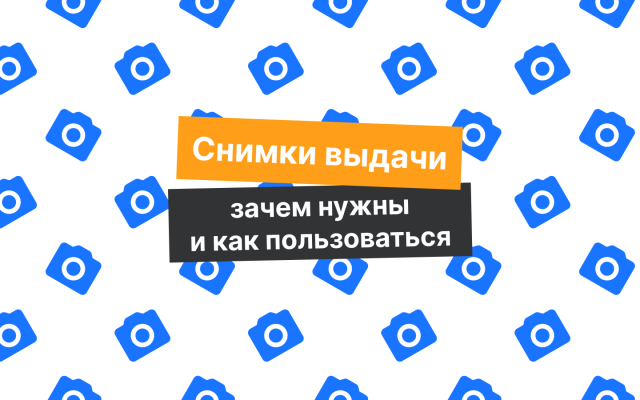
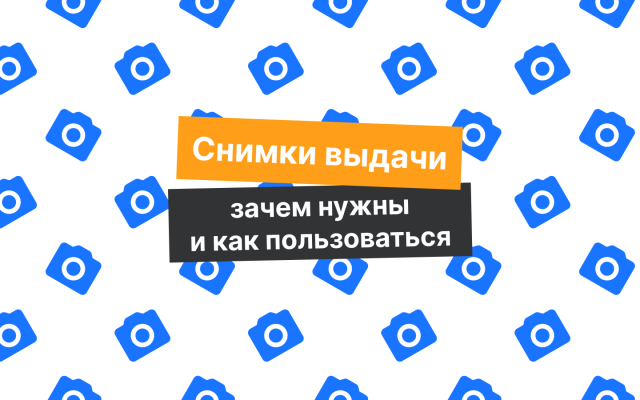

Что такое «Снимки выдачи» и как ими пользоваться
Вместе с экспертами расскажем, для чего делать cнимки выдачи и как они помогают SEO-специалистам в работе.
Вместе с экспертами расскажем, для чего делать cнимки выдачи и как они помогают SEO-специалистам в работе.
